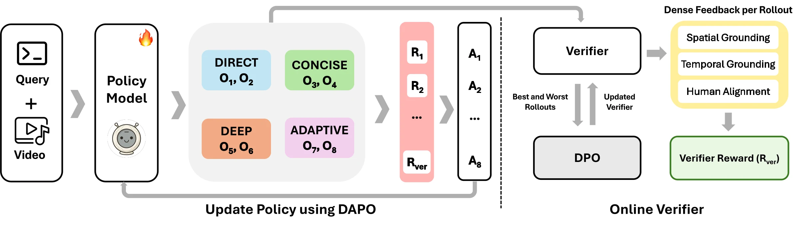
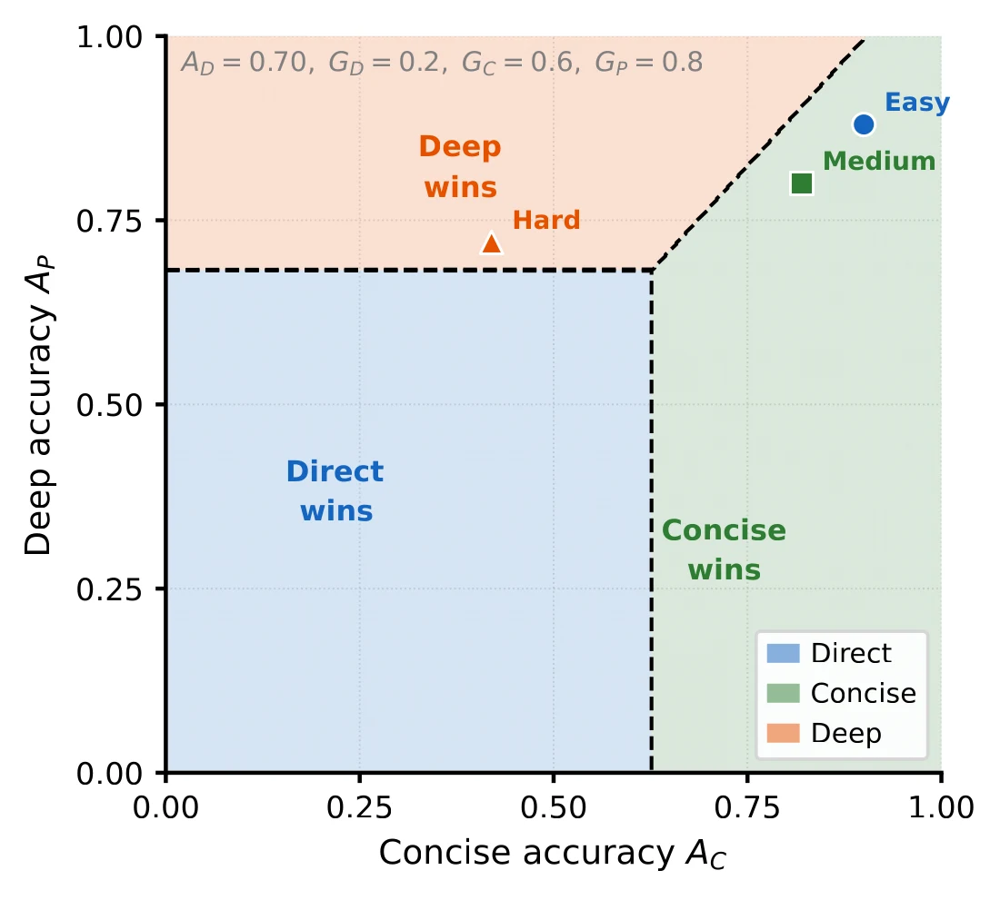
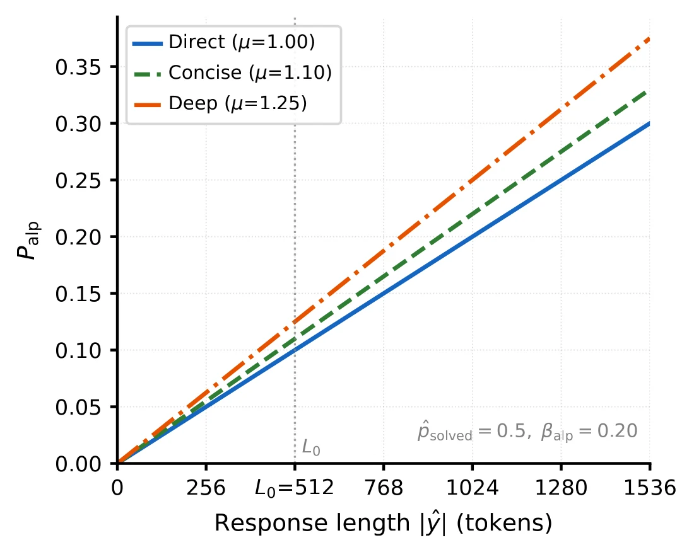
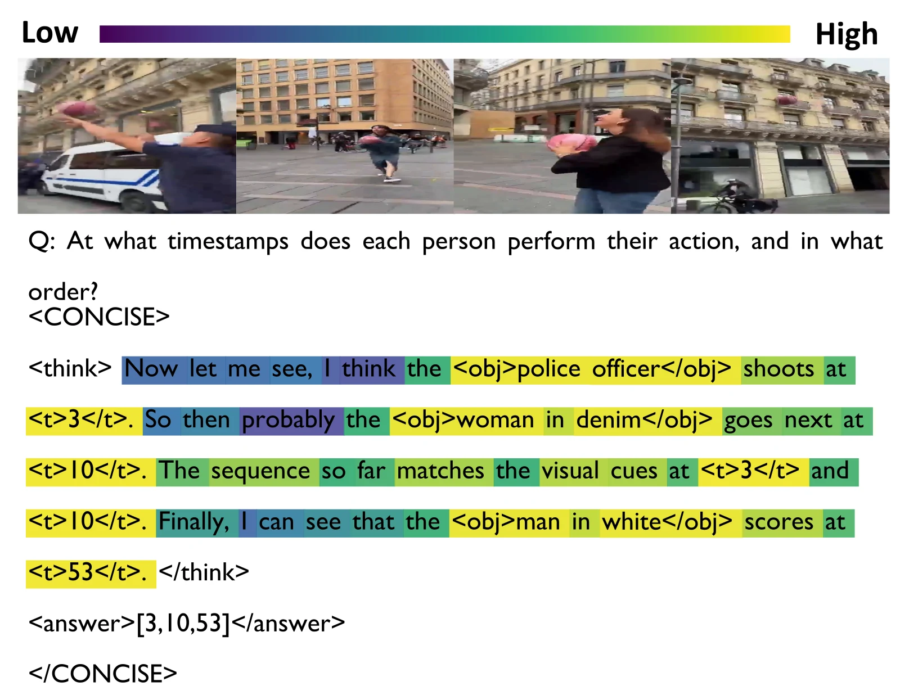
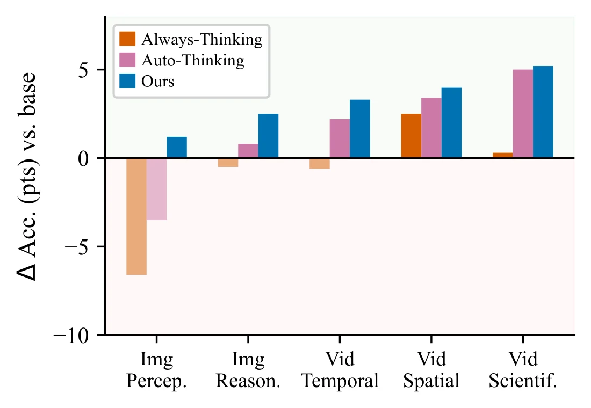
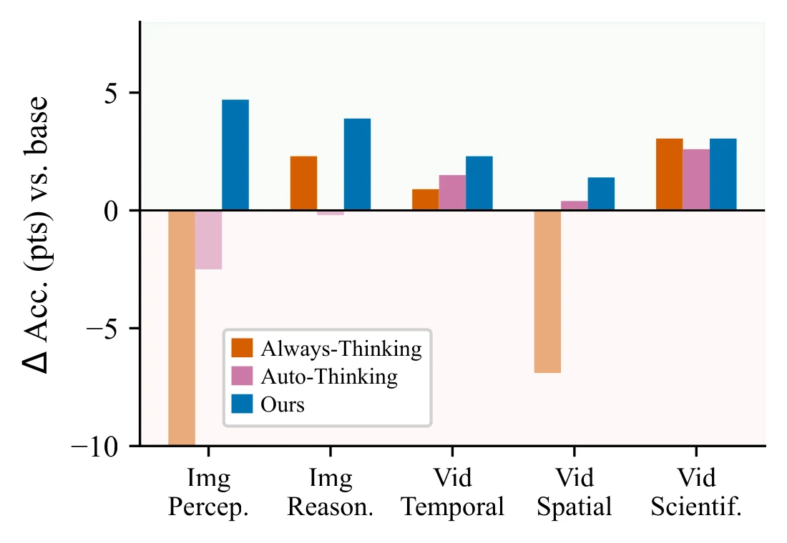
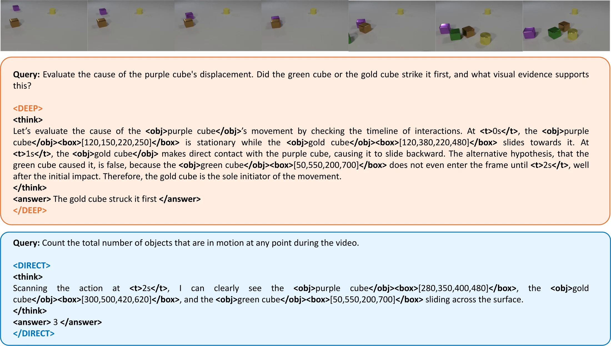
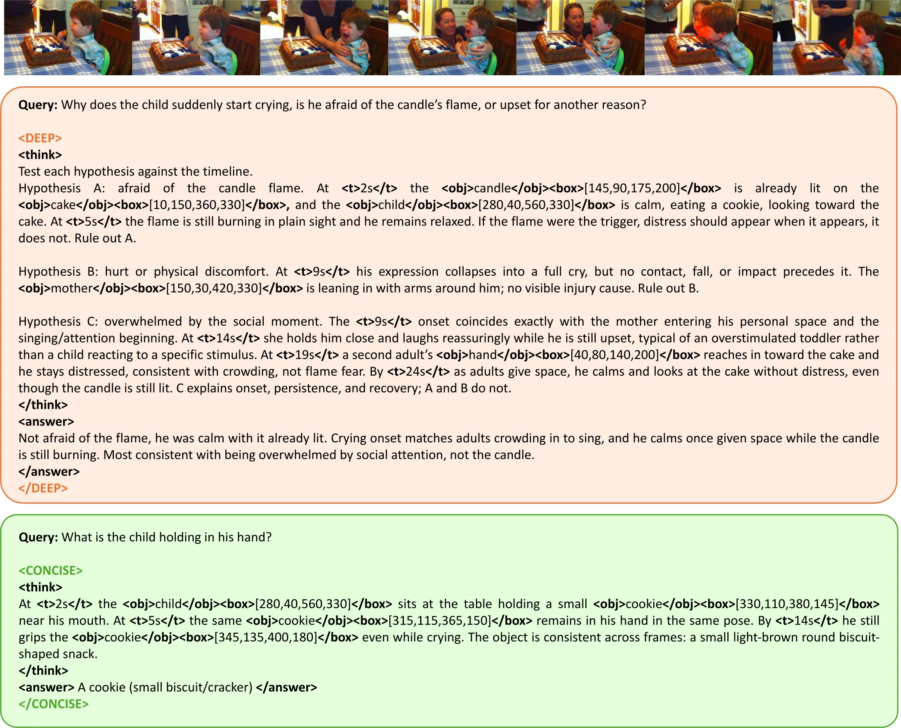
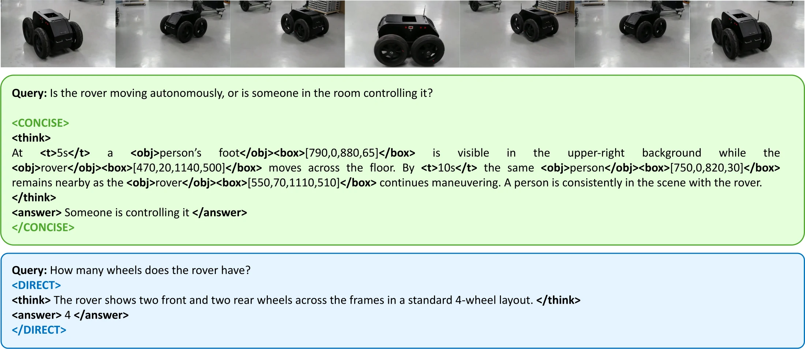
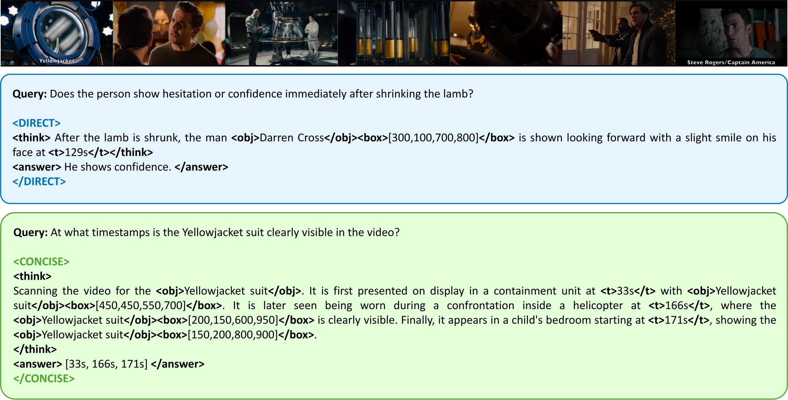

Multimodal queries can require different types of reasoning. Some can be answered via perceptual reasoning, extracting information directly from the visual signal, while others require compositional reasoning that combines observations or deliberative reasoning that evaluates competing hypotheses. However, many existing methods apply a uniform reasoning strategy across queries, leading to unnecessary computation on simple tasks and insufficient reasoning on complex ones.
We introduce Video-FLAIR, a training framework that learns to select the appropriate reasoning mode for each query using reinforcement learning. During training, the model generates responses under all three modes for the same prompt, enabling direct comparison. A composite reward compares these responses to favor the most effective one based on correctness, grounding, and cost, while discouraging unsupported or misaligned deliberation. This yields a supervision signal for learning adaptive reasoning without per-query annotations.
Video-FLAIR improves accuracy over the Qwen2.5-VL base model by +5.4 on MathVista, +4.8 on Video-Holmes, and +4.8 on Video-MMMU, while reducing average token usage to 95 compared to 417 for always-thinking baselines.
Existing methods either apply the same reasoning strategy to every query or decide only whether to reason. Video-FLAIR instead treats reasoning as an adaptive process and chooses how to reason, distinguishing modes by the structure of their evidence chains rather than by their length.
Extracts a single observation that maps directly to the answer. The evidence chain has no branches and the reasoning path is immediate.
Combines multiple observations through a linear sequence, where each step builds on the previous one without revisiting or branching.
Revisits the same evidence to evaluate and reject competing hypotheses. Depth reflects search over interpretations rather than longer chains.
Starting from an SFT warm-start on mode-structured traces, Video-FLAIR generates rollouts under every reasoning mode for the same prompt, scores them with a composite reward that includes an online verifier, and derives a utility that identifies the most effective mode. Advantages are normalized per reward component with GDPO, reweighted token by token, and used to update the policy with DAPO.

Each video and query pair generates eight mode-structured rollouts. The verifier provides dense per-rollout feedback and is periodically refreshed with DPO on the highest and lowest reward rollouts.
For every query, the eight rollouts follow a fixed slot assignment. Six controlled slots force each mode twice, so the outcomes of all three modes can be compared on the same input. Two adaptive slots describe every mode without naming one, so the model must choose a mode before answering. This within-query comparison replaces per-query mode labels.
The seven reward terms form three functional groups, and each group contributes a distinct gain when added in turn.
Task accuracy by answer type, the output schema, and compliance with the assigned mode and its word budget.
A difficulty-aware length penalty that is strong on easy queries and relaxed on hard ones, plus a term that prevents mode collapse.
Utility-derived supervision for the adaptive slots and dense grounding feedback from the online verifier.
Within each rollout group, the controlled slots give every mode an accuracy Ans(m) and a verifier grounding score G(m). Their utility trades accuracy and grounding against cost, and the best mode m* supervises the adaptive slots.

More expensive modes win only when their accuracy and grounding gain exceeds their cost.

The adaptive length penalty grows with length and relaxes on hard queries, so <DEEP> is not penalized when it is needed.
A Qwen3-VL-8B verifier, initialized from the base checkpoint and never updated by the policy loss, scores each reasoning trace for temporal grounding, spatial grounding, and human alignment. Every 100 RL steps it is refreshed with DPO on pairs ranked by the full composite reward, where answer correctness dominates, so a well-grounded but wrong rollout is still rejected. Token-level credit then concentrates the gradient on evidence-bearing spans such as timestamps and object boxes, and away from hedging and filler.

Grounded spans receive high credit while hedging phrases such as “I think” and “probably” receive low credit.
Across six image and five video benchmarks and two base models, Video-FLAIR improves accuracy while using a fraction of the tokens of always-thinking methods. Always-thinking baselines lose accuracy on perception-heavy tasks such as EMMA and HallusionBench, where long chains introduce visually ungrounded steps, while Video-FLAIR gains on every benchmark.
Deltas are absolute changes over the base model. For Video-FLAIR, margins are 95% confidence intervals from a paired bootstrap over benchmark items, and ‡ marks a gain that is not significant at the 0.05 level. Best per column in bold. All results are reproduced under identical evaluation settings.
Ablations on Qwen2.5-VL-7B isolate the contribution of the mode space, the reward groups, and learned selection.
| Method | MMMU | EMMA | V-Holmes | V-MMMU | Tok |
|---|---|---|---|---|---|
| Base model | 52.0 | 25.8 | 43.2 | 52.1 | – |
| Zero-shot prompt | 51.8 | 25.2 | 42.8 | 51.5 | 340 |
| Static 64-token budget | 44.5 | 18.2 | 33.8 | 42.0 | 64 |
| SFT prompt selector | 52.9 | 26.1 | 44.7 | 53.3 | 160 |
| Router + SFT | 53.5 | 26.5 | 46.0 | 54.5 | 85 |
| Video-FLAIR | 54.5 | 27.3 | 48.0 | 56.9 | 61 |
Shorter answers alone do not explain the gains, and a learned router still trails RL by 2.0 points on Video-Holmes and 2.4 on Video-MMMU.
| Variant | MMMU | EMMA | V-MMMU | Tok |
|---|---|---|---|---|
| Correctness only | 51.8 | 21.9 | 49.8 | 412 |
| + Cost group | 53.0 | 23.0 | 52.0 | 185 |
| + Selection | 54.1 | 25.7 | 55.5 | 70 |
| + Verifier (full) | 54.5 | 27.3 | 56.9 | 67 |
The cost group cuts tokens, adaptive selection gives the largest accuracy gains, and the verifier improves grounding-sensitive benchmarks.
| Mode | MMMU | EMMA | V-MMMU | Tok |
|---|---|---|---|---|
| Forced <DIRECT> | 51.4 | 22.1 | 49.7 | 57 |
| Forced <CONCISE> | 53.1 | 25.6 | 53.2 | 247 |
| Forced <DEEP> | 52.8 | 28.5 | 55.8 | 963 |
| Adaptive | 54.5 | 27.3 | 56.9 | 67 |
No fixed mode matches adaptive selection. Forced <DEEP> helps EMMA slightly but costs over 14× the tokens.
| Mode space | MMMU | EMMA | V-MMMU | Tok |
|---|---|---|---|---|
| Video-Auto-R1 (binary) | 52.0 | 23.7 | 54.2 | – |
| Direct / think (2 modes) | 52.9 | 24.4 | 55.1 | 61 |
| Three modes | 54.5 | 27.3 | 56.9 | 67 |
Merging <CONCISE> and <DEEP> into one thinking mode drops performance to the level of binary auto-thinking.
Mode selection tracks what each benchmark demands rather than cost alone. Retrieval-oriented benchmarks such as AI2D and HallusionBench stay mostly <DIRECT>, while inference-heavy and research-level benchmarks shift toward <CONCISE>. <DEEP> is reserved for the small fraction of queries where competing explanations must be ruled out, and removing it hurts exactly those benchmarks.
Share of queries routed to each mode by Video-FLAIR, sorted by <DIRECT> usage.
Always-thinking models collapse on image perception and video spatial reasoning, where verbose thinking hallucinates answers that should be read from the visual signal. Video-FLAIR is the only method with positive gains across all five categories on both base models.

Qwen2.5-VL-7B

Qwen3-VL-8B
Each example pairs two queries on the same video, showing where mode selection succeeds and where it can still improve.

TopThe query asks which cube displaced the purple cube. <DEEP> establishes that the green cube enters the frame only after the impact, eliminating that hypothesis, and confirms gold-cube contact with timestamped boxes.
BottomCounting moving objects needs a running tally over the whole video. The policy routes to <DIRECT>, inspects one frame, and reports 3 instead of 4, since the temporal structure calls for <CONCISE>.

TopThree mutually exclusive explanations for a child's distress must each be eliminated. <DEEP> tests flame fear, physical discomfort, and social overwhelm, tying every step to a timestamped observation.
BottomThe object query is answerable from any single frame, yet <CONCISE> chains three confirmations of the same cookie where <DIRECT> would suffice.

TopDeciding whether a rover is autonomous or operator-controlled requires falsifying the autonomous hypothesis across controller presence, motion smoothness, and gaze. The policy routes to <CONCISE>, which chains observations without weighing alternatives.
BottomCounting the rover's wheels involves no competing hypotheses and can be answered from any clear frame, so <DIRECT> is the most efficient choice.

TopAssessing a character's emotional state requires weighing posture, gaze, and reaction across frames. Social queries can resemble single-frame lookups, and here the policy routes to <DIRECT>.
BottomFinding every appearance of the Yellowjacket is a sequential scan, and <CONCISE> correctly chains three grounded appearances across the video.
@inproceedings{kulkarni2026videoflair,
title={Video-FLAIR: Not Whether to Reason, But How},
author={Yogesh Kulkarni and Pooyan Fazli},
booktitle={Advances in Neural Information Processing Systems (NeurIPS)},
year={2026}
}